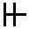
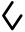

Okaikiar has a phonemic writing system. Like Hangul, each syllable forms a visible block, but the shape of each syllable block is constructed out of symbols for the constituent segments. So there's no need to memorize 1,152 independent symbols.
The script is called called Orendiar, and is visible in the background image on these pages spelling out the word Okaikiar.
Each consonant is a shape formed by putting one, two, or three vertical strokes on a horizontal bar, as follows:
| Orendiar | Roman |
|---|---|
| d | |
| k | |
| l | |
| m | |
|  | n |
| r | |
| z |
The shapes above are used when discussing the segments in isolation, but the actual shape used in a glyph depends upon the position of the consonant within the syllable. Initial consonants appear at the top of the glyph and only have descenders on the vertical strokes. A lone final consonant appears at the bottom of the glyph and only has ascenders. If the coda is a cluster, the first segment has ascenders and the second descenders from the same horizontal line.
The eight vowels are associated with portions of a diamond bisected with a horizontal line:
| Orendiar | Roman |
|---|---|
| a | |
| e | |
| i | |
| o | |
| ø | |
| u | |
| y | |
|  | ' |
I'll demonstrate the creation of a syllable using my name, Mark, which just happens to be a legal Okaikiar syllable. Start with a grid of twelve dots, arranged in four rows of three columns each:
Now add M in the initial consonant position, along the top with the strokes coming down:
Then the A in the vowel position, which is a diamond centered on the second row:
Then the R in the final consonant position, with the horizontal bar along the third row and the strokes pointing up:
And finally the K, sharing the horizontal bar with the R, but with the strokes pointing down instead of up:
Yielding the finished product, the Orendiar glyph for the syllable mark:
Adjacent syllables can be written in the same order as English: left to right, top-down, and that is the order used on these pages. It is more common, however, to see them written top-down, right-to-left.
You can render arbitrary text into Orendiar on the Orenderer page.